Activity: Edit holes
This activity demonstrates the process of editing holes. In this activity you will:
-
Change the hole size.
-
Change the type of holes.
-
Add new holes.
-
Separate one hole instance from others.
Click here to download the activity file.
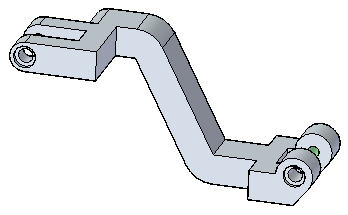
-
Open hole_edit.par.
 Note:
Note:Four holes exist on this part, represented in two face sets (Hole1 and Hole3) in Pathfinder.
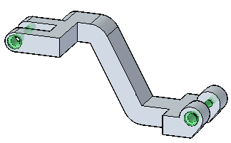
Select the left hand counterbore hole (Hole 1).
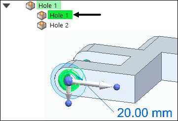
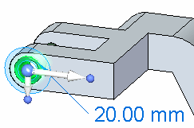
Select the dimension handle.
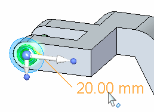
The hole edit control box is displayed.
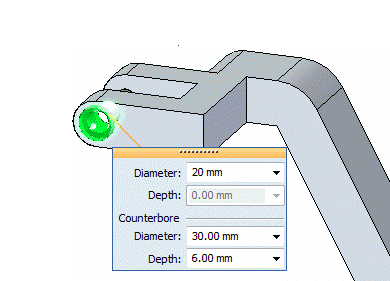
Change the hole diameter (1) to 10 mm.
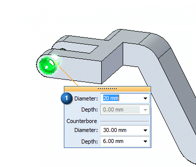
Change the counter bore diameter (2) to 20 mm and the counter bore depth (3) to 10 mm.
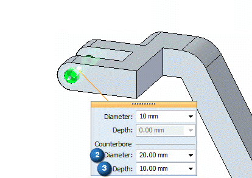
Note that these changes propagate to the lower right hand counter bore (4). This is because these two holes were placed within the same command. They exist within the same face set.
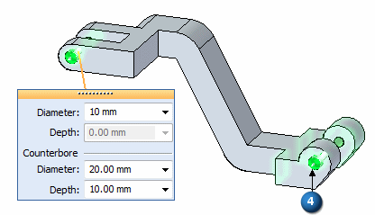
All changes to a single hole within a face set affects all other hole instances in that face set.
-
While you still have the hole selected, on the Hole command bar, click the Options drop list and select 1/2 Countersink.
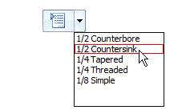
By default, the 1/2 Countersink parameters are in English units.
You can change the units to Metric by selecting the Hole Options button and selecting mm from the Standard drop list.

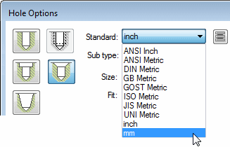
In the Saved Settings box, enter the name 12.7 mm Countersink and then click Save.
Not only have the hole parameters changes to Metric units, but the saved settings are now available from the command bar.
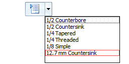
Change the diameter to 10 mm, and the countersink diameter to 20 mm.
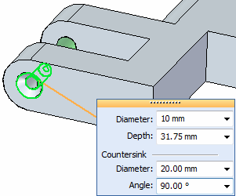
Note:You can save as many frequently-used settings as needed across your design organization. For more information, see the Help topic Holes database.
-
Select the upper simple hole at top-left of the part and click the hole edit handle.
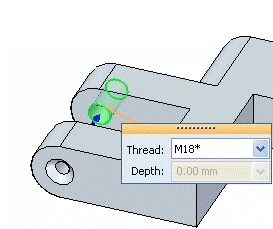
On the command bar, select the Add button .
Place the new hole on the central beam as shown.
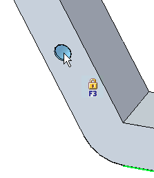
Note:You can add as many holes carrying the same attributes as the selected one. These added holes can be placed on any face, unless you lock a plane.
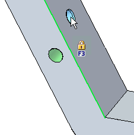
To change the parameters of just one hole of a group, use the Separate command on the shortcut menu.
Select the countersink hole at the left end of the part. Right-click and choose the Separate command.
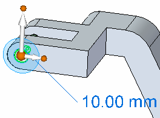
Select the hole's handle, and select 1/2 Counterbore from the command bar drop list.
Note that the hole changes independently of the right hand one.
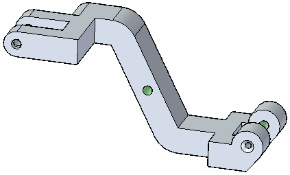
Save and Close this file.
In this activity you learned how to edit existing hole features on a solid model. You also learned how to edit one hole in a set without changing the whole set.
-
Click the Close button in the upper-right corner of this activity window.